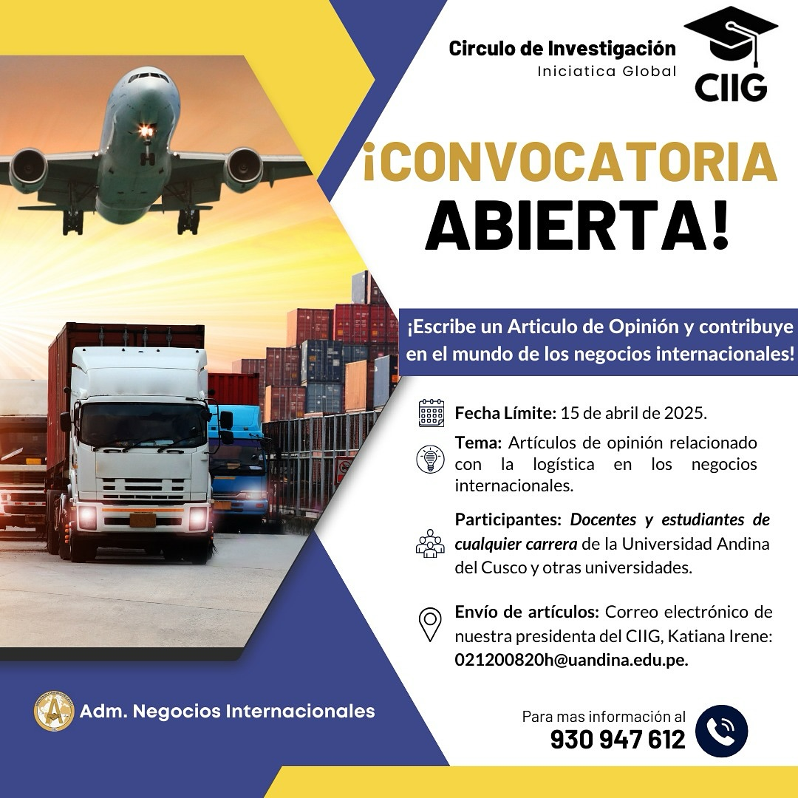
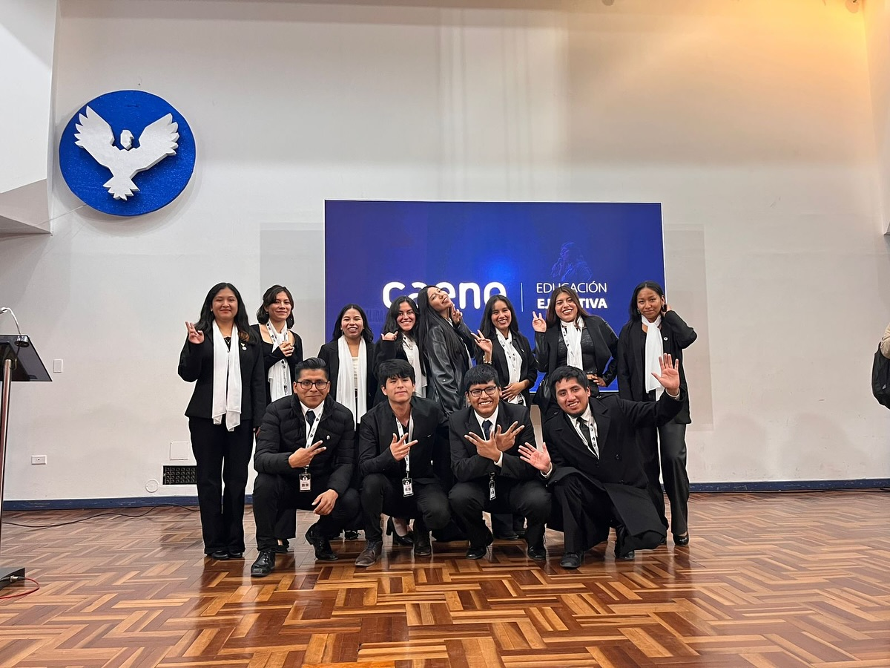
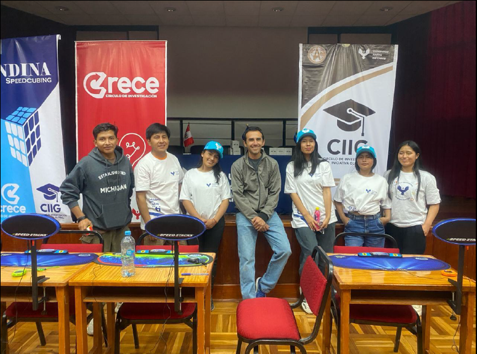

Evento
Evento
31 de Marzo, 2026
Taller de Liderazgo Estratégico
Realizado en el auditorio FCEAC con la participación magistral del Mgt. Andy Roy y ponentes destacados.
Explora nuestras actividades, investigaciones y el impacto generado por la comunidad CIIG en cada proyecto.
Evento
Realizado en el auditorio FCEAC con la participación magistral del Mgt. Andy Roy y ponentes destacados.

ConvocatoriaInvitación abierta a la comunidad universitaria para escribir sobre logística en negocios internacionales.

Foro RegionalColaboración estratégica reuniendo a CEOs de empresas líderes como Hunt Oil y Natura.
 Innovación
Innovación
Emprendimiento premiado enfocado en nutrición y sostenibilidad mediante hongos de pino.

HabilidadesFomentando el pensamiento lógico y la creatividad con participación de competidores internacionales.